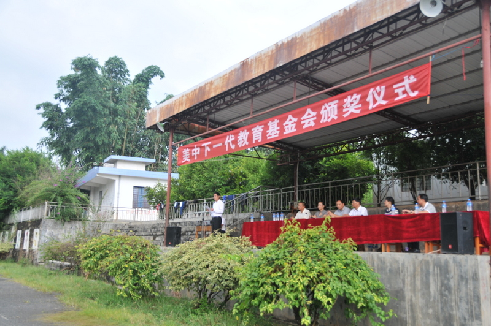

秋天—将是收获的季
江河
2013年11月5日
看着汽车窗外的田野和树木急速向后倒去。远处村庄后面的山上有几只牛羊在阳光下悠闲的吃着草。由于是秋天，田地里的农作物大都呈现着一片金色的景象，散发着成熟的气息。我在沉思，在想象一年之隔后的三台山会是什么样子呢 ? 这个位于中国云南省德宏州德昂族自治乡九年制学校就是我此次是要去的目的地。 受美中下一代教育基金会的委托，我到这个中国人数最少的少数民族-德昂族聚居的边远山乡，为品学兼优，但是家庭生活困难的孩子们颁发2013年度的奖学金。这些奖学金是来自许多好心人的捐助并带着他们的祝福，他们希望能帮助这些生活在穷乡僻野的孩子们能多学到一点知识，让孩子们在将来漫长的人生道路上能走的容易一些。
2013年9月25日我们来到了这个边远山区的学校，看到孩子们坐在操场上，穿着自己干干净净，五颜六色的衣服，（比我上次来时看到的好多了，猜想恐怕是他们最好的衣服之一吧）这和城里学校的学生大都穿着整齐的校服是有些不一样。孩子们东张西望，交头接耳的在议论着什么。从他（她）们的表情中，你能感受到他们心里也许有一些的疑惑， 但是更多的是透过笑容表现出来的喜悦。当地政府的官员，媒体，电视台的朋友们和许多孩子的家长都来了。来为美中下一代教育基金会的善举表示一点他们崇高的敬意。对于这些孩子们来说今天是一个美好，重要和令人感到愉快的日子。谢谢你们，远在万里之遥的爷爷，奶奶，叔叔，阿姨，大哥哥，大姐姐们。我们虽然从未谋面，素不相识， 但是你们的好意和给予我们的实际帮助，让我们感受到了人间的真情和温暖，我们唯有继续努力学习，好让远方的你们能有欣慰和安心。谢谢你们---远方好心的人们。孩子的发言，简朴，真诚，他们不善言辞，没有更多华丽的词藻。对于很多道理也还不能完全弄明白。但是他们的语言确实能让人们感受到那是来自他们心里的话语，表现出来的是山里人的淳朴，是感恩。 了解到孩子们家庭的实际情况（2012年全乡全年人均收入不足3000元人民币）和获得奖学金的激动，看到孩子眼里的泪水，让我感到释然，欣慰的感受到美中下一代教育基金会做的这件事对贫困地区的孩子们和乡亲们的鼓励和肯定的正面意义。
我向他（她）们解释。这些你们素不相识爷爷，奶奶，叔叔，阿姨，大哥哥，大姐姐们。他们之中的很多人，曾经有过和你们相似的人生经历。但是他们面对这一切，克服各种的困难，坚持努力勤奋的学习，他们知道这是为自己的未来创造美好生活的途径。所以他们更能够理解和体会你们目前的处境。还有许多好心善良的人们， 他们想给予你们一点点的他们力所能及的帮助，帮助千千万万象你们这样的孩子。希望你们能在将来生活的道路上走得好一点，顺利些。你们大家都好了，社会就好，社会都好了，世界将会更加美丽。这就是他们的心愿。
|  |

|